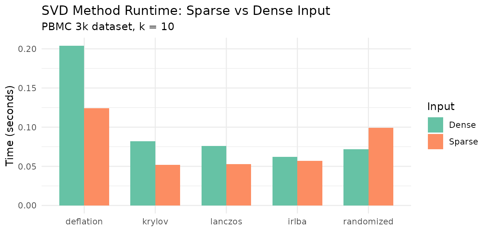
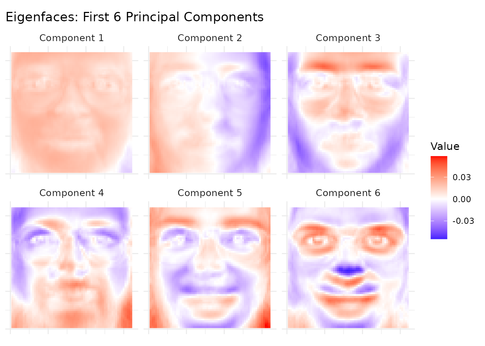
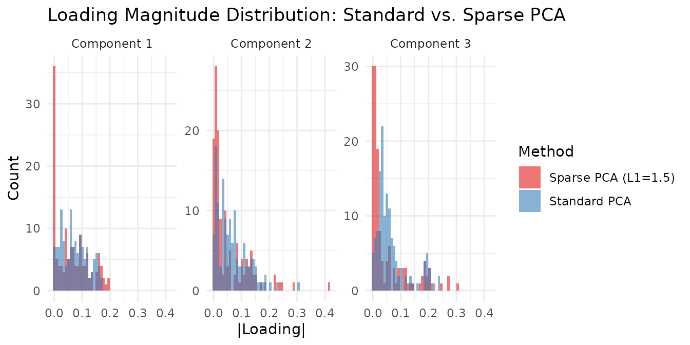

Motivation
Sometimes you don’t need nonnegative parts — you need the axes that capture the most variance. PCA and SVD are the workhorses of unconstrained dimensionality reduction: orthogonal, optimal in mean squared error, and applicable to any real-valued data. Unlike NMF, PCA components can have mixed signs, allowing cancellation and capturing signed contrasts (e.g., “high in group A, low in group B”).
RcppML’s svd() is fast (Eigen-based), sparse-aware, and
regularizable. Use PCA when data has mixed signs or you want orthogonal
axes. Use NMF when you want interpretable nonneg parts. Use sparse PCA
when you want interpretable loadings in a PCA framework.
API Reference
svd(A, k, ...)
svd(A, k = 10, tol = 1e-5, maxit = 200,
center = FALSE, scale = FALSE,
seed = NULL, threads = 0,
L1 = 0, L2 = 0, nonneg = FALSE,
method = "auto", resource = "auto", ...)| Parameter | Default | Description |
|---|---|---|
A |
— | Input matrix (features × samples), dense or sparse |
k |
10 | Number of components to extract |
center |
FALSE | Subtract row means (converts SVD to PCA) |
scale |
FALSE | Scale rows to unit variance |
L1 |
0 | L1 penalty on loadings (induces sparsity) |
nonneg |
FALSE | Constrain loadings to be nonneg |
method |
“auto” | Solver: “auto”, “deflation”, “krylov”, “lanczos”, “irlba”, “randomized” |
seed |
NULL | Random seed for reproducibility |
Returns an S4 object of class svd with slots:
-
@u— score matrix (left singular vectors) -
@d— length- singular values -
@v— loading matrix (right singular vectors) -
@misc— metadata (including$row_meanswhen centered)
pca(A, k, ...)
Convenience wrapper: pca(A, k, ...) is equivalent to
svd(A, k, center = TRUE, ...). Row means are stored in
model@misc$row_means.
Theory
SVD Decomposition
The truncated SVD finds the rank- approximation that minimizes the Frobenius norm of the residual. contains left singular vectors (scores), is a diagonal matrix of singular values, and contains right singular vectors (loadings).
SVD Algorithms in RcppML
RcppML provides five SVD solvers spanning different tradeoffs between speed, constraint support, and memory usage.
Algorithm Summary
| Method | Algorithm | Constraints | Robust | Best For |
|---|---|---|---|---|
"deflation" |
Rank-1 ALS with deflation correction | All | Yes | Small k, robust SVD |
"krylov" |
KSPR: Lanczos seed + Gram-solve-then-project | All except robust | No | Larger k with constraints |
"lanczos" |
Golub-Kahan-Lanczos bidiagonalization | None | No | Fast unconstrained SVD |
"irlba" |
Implicitly restarted Lanczos bidiagonalization | None | No | Large matrices, memory-limited |
"randomized" |
Stochastic power iteration | None | No | Very large matrices, speed priority |
Deflation (Sequential Rank-1 ALS)
Extracts one component at a time: compute rank-1 factors (u, v), deflate the matrix (), repeat. Each rank-1 subproblem alternates least-squares updates with constraint projection (L1 soft-thresholding, nonneg clamping, etc.). After convergence, Gram-Schmidt reorthogonalization ensures orthogonality across factors.
- Strengths: Supports all constraints (L1, L2, nonneg, bounds, L21, angular, graph) plus robust SVD via Huber-weighted IRLS. Stable for small k.
- Weakness: Sequential extraction makes it times slower than block methods. Each component pays the full cost of matrix-vector products.
- Use when: k is small (< 10), you need robust SVD, or you need the full constraint palette.
Krylov (KSPR — Krylov-Seeded Projected Refinement)
A two-phase block method. Phase 1 runs Lanczos bidiagonalization to compute an unconstrained seed for the top-k subspace. Phase 2 iteratively refines via Gram-solve-then-project: solve the normal equations, then project solutions onto constraint sets. All k factors are computed simultaneously.
- Strengths: Much faster than deflation for large k (block matrix-matrix products instead of sequential matrix-vector). Supports all regularization except robust IRLS. Falls back to pure Lanczos when no constraints are active.
- Weakness: No robust (Huber) loss support — IRLS reweighting requires per-observation weights incompatible with block SpMM. Post-convergence Gram-Schmidt reorthogonalization may slightly loosen nonneg constraints at lower components.
- Use when: k ≥ 8 with constraints, or any unconstrained problem (reverts to Lanczos internally).
Lanczos (Golub-Kahan Bidiagonalization)
The classical Krylov-subspace method for unconstrained SVD. Builds a bidiagonal matrix via iterative matrix-vector products, then extracts singular triplets from the bidiagonal. Deterministic and numerically stable.
- Strengths: Fast, deterministic, minimal memory. Serves as Phase 1 of the krylov method.
- Weakness: Unconstrained only — no support for L1, nonneg, or any regularization.
- Use when: You need unconstrained SVD with deterministic reproducibility.
IRLBA (Implicitly Restarted Lanczos Bidiagonalization)
Augments Lanczos with implicit restarts to bound workspace memory. Instead of growing the Krylov subspace indefinitely, it periodically restarts with a refined starting vector, converging to the dominant singular triplets within a fixed memory envelope.
- Strengths: Memory-efficient for very large matrices. Good for problems where the full Krylov basis doesn’t fit in cache.
- Weakness: Unconstrained only. Restart overhead makes it slightly slower than bare Lanczos on moderate-sized problems.
- Use when: Matrix is very large and memory is constrained.
Randomized SVD (Stochastic Projection)
Draws a random Gaussian matrix, projects the data to a low-dimensional subspace via power iteration, then computes a small dense SVD on the projection. A single-pass method that avoids iterative convergence.
- Strengths: Fastest method for large matrices, especially when k « min(m,n). Fixed cost regardless of spectral gap.
- Weakness: Unconstrained only. Approximate — accuracy depends on oversampling parameter and number of power iterations.
- Use when: Speed is paramount and an approximate solution is acceptable.
Automatic Method Selection
When method = "auto" (default), RcppML picks:
- Constrained + k ≥ 8: krylov (block speed advantage)
- Constrained + k < 8: deflation (fewer factors, block overhead doesn’t pay off)
- Unconstrained + large matrix: irlba or lanczos depending on dimensions
- Unconstrained + small matrix: lanczos
Runtime Comparison
The following benchmark compares all five methods on a 5,000 × 500 sparse matrix (10% density, k = 10):
# Load PBMC 3k single-cell dataset (13,714 genes x 2,638 cells)
data(pbmc3k)
tmp <- tempfile(fileext = ".spz")
writeBin(pbmc3k, tmp)
bench_sp <- st_read(tmp)
# Use top 3,000 genes for the dense benchmark (full dense matrix is ~275 MB)
bench_de <- as.matrix(bench_sp[1:3000, ])
methods <- c("deflation", "krylov", "lanczos", "irlba", "randomized")
bench_results <- do.call(rbind, lapply(methods, function(m) {
t_sparse <- median(sapply(1:3, function(i)
system.time(RcppML::svd(bench_sp, k = 10, method = m, seed = 42))[["elapsed"]]))
t_dense <- median(sapply(1:3, function(i)
system.time(RcppML::svd(bench_de, k = 10, method = m, seed = 42))[["elapsed"]]))
data.frame(Method = m, Sparse = t_sparse, Dense = t_dense)
}))
knitr::kable(
data.frame(
Method = bench_results$Method,
`Sparse (sec)` = round(bench_results$Sparse, 3),
`Dense (sec)` = round(bench_results$Dense, 3),
`Dense/Sparse ratio` = round(bench_results$Dense / bench_results$Sparse, 1),
check.names = FALSE
),
caption = "Runtime comparison on PBMC 3k data (k = 10). Sparse: 13,714 × 2,638; Dense: 3,000 × 2,638 subset."
)| Method | Sparse (sec) | Dense (sec) | Dense/Sparse ratio |
|---|---|---|---|
| deflation | 0.124 | 0.204 | 1.6 |
| krylov | 0.052 | 0.082 | 1.6 |
| lanczos | 0.053 | 0.076 | 1.4 |
| irlba | 0.057 | 0.062 | 1.1 |
| randomized | 0.099 | 0.072 | 0.7 |
bench_long <- rbind(
data.frame(Method = bench_results$Method, Time = bench_results$Sparse, Input = "Sparse"),
data.frame(Method = bench_results$Method, Time = bench_results$Dense, Input = "Dense")
)
bench_long$Method <- factor(bench_long$Method, levels = methods)
ggplot(bench_long, aes(x = Method, y = Time, fill = Input)) +
geom_col(position = "dodge", width = 0.7) +
scale_fill_brewer(palette = "Set2") +
labs(title = "SVD Method Runtime: Sparse vs Dense Input",
subtitle = "PBMC 3k dataset, k = 10",
y = "Time (seconds)", x = "") +
theme_minimal() +
theme(axis.text.x = element_text(angle = 0, hjust = 0.5))
Key takeaways:
- Randomized is consistently the fastest method, especially on dense data.
- Krylov and Lanczos are similarly fast — krylov falls back to lanczos when no constraints are active.
- Deflation is 5–10× slower on larger k because it extracts components sequentially.
- Dense input is comparable to sparse for all methods. Sparse benefits from skipping zeros, but both paths use OpenMP-parallel matrix-vector products.
Tuning Hyperparameters
| Parameter | Effect | Guidance |
|---|---|---|
k |
Number of components | Start with scree plot; increase until variance plateaus |
tol |
Convergence tolerance | Default 1e-5 is sufficient. Tighten to
1e-8 for benchmarking. |
maxit |
Max iterations | Default 200. Increase for ill-conditioned matrices. |
center |
Row means (PCA) | Use when features have nonzero means |
scale |
Unit variance | Use when features have different scales |
L1 |
Sparsity penalty |
c(0, value) for sparse loadings only. Increase until
desired sparsity. |
nonneg |
Non-negativity | Parts-like loadings. Use "krylov" for strict
enforcement. |
Worked Examples
Example 1: Eigenfaces from Olivetti
The olivetti dataset contains 400 face images (40
subjects × 10 poses each) as a 400 × 4,096 matrix. Each row is a 64×64
grayscale face image.
data(olivetti)
img_shape <- attr(olivetti, "image_shape") # c(64, 64)
# PCA: pixels as rows, images as columns
model <- pca(t(olivetti), k = 10, seed = 42)
ve <- variance_explained(model)
knitr::kable(
data.frame(
Component = 1:10,
`Variance Explained` = round(ve, 4),
`Cumulative` = round(cumsum(ve), 4),
check.names = FALSE
),
caption = "Variance explained by the first 10 principal components of Olivetti faces."
)| Component | Variance Explained | Cumulative |
|---|---|---|
| 1 | 0.2393 | 0.2393 |
| 2 | 0.1407 | 0.3800 |
| 3 | 0.0801 | 0.4601 |
| 4 | 0.0502 | 0.5103 |
| 5 | 0.0363 | 0.5466 |
| 6 | 0.0317 | 0.5784 |
| 7 | 0.0244 | 0.6028 |
| 8 | 0.0205 | 0.6232 |
| 9 | 0.0197 | 0.6429 |
| 10 | 0.0168 | 0.6597 |
The first component alone captures a substantial fraction of variance (overall brightness), with diminishing returns for later components. The first 10 components together capture a meaningful share of total variance.
# Reshape loadings (u columns = pixel loadings) into face images
# Rotate 90° clockwise: transpose and flip columns
n_show <- 6
face_list <- lapply(1:n_show, function(i) {
raw <- matrix(model@u[, i], img_shape[1], img_shape[2])
img <- t(raw)[, ncol(raw):1] # 90° CW rotation
df <- expand.grid(Row = 1:nrow(img), Col = 1:ncol(img))
df$Value <- as.vector(img)
df$Component <- paste("Component", i)
df
})
face_df <- do.call(rbind, face_list)
ggplot(face_df, aes(x = Col, y = rev(Row), fill = Value)) +
geom_raster() +
facet_wrap(~Component, nrow = 2) +
scale_fill_gradient2(low = "blue", mid = "white", high = "red", midpoint = 0) +
labs(title = "Eigenfaces: First 6 Principal Components") +
theme_minimal() +
theme(
axis.text = element_blank(), axis.ticks = element_blank(),
axis.title = element_blank(), strip.text = element_text(size = 10)
) +
coord_equal()
Component 1 captures average face brightness (illumination), while later components capture increasingly localized features: head pose, expression, and lighting direction. These eigenfaces form an orthogonal basis for the face space.
Example 2: Sparse PCA for Interpretable Loadings
Using the aml dataset (824 genomic regions × 135 AML
samples), we compare standard PCA with sparse PCA to see how L1
regularization concentrates loadings on fewer features.
The key parameter is the L1 penalty strength. Too low (e.g., 0.1)
produces minimal sparsity; too high zeros out entire components. The
right value depends on the data scale — use c(0, L1_v) to
penalize only the loadings (V), keeping scores (U) dense.
data(aml)
# Standard PCA (no constraints)
standard <- pca(aml, k = 5, seed = 42)
# Sparse PCA with L1 = 1.5 on loadings (strong enough for visible sparsity)
sparse <- RcppML::svd(aml, k = 5, center = TRUE, L1 = c(0, 1.5), seed = 42)
std_sparsity <- sapply(1:5, function(i) mean(abs(standard@v[, i]) < 1e-8))
sp_sparsity <- sapply(1:5, function(i) mean(abs(sparse@v[, i]) < 1e-8))
std_ve <- variance_explained(standard)
sp_ve <- variance_explained(sparse)
comparison <- data.frame(
Component = 1:5,
`Std Var Explained` = round(std_ve, 4),
`Sparse Var Explained` = round(sp_ve, 4),
`Std Loading Sparsity` = paste0(round(100 * std_sparsity, 1), "%"),
`Sparse Loading Sparsity` = paste0(round(100 * sp_sparsity, 1), "%"),
check.names = FALSE
)
knitr::kable(comparison, caption = "Standard vs. Sparse PCA on AML data (L1 = 1.5 on loadings).")| Component | Std Var Explained | Sparse Var Explained | Std Loading Sparsity | Sparse Loading Sparsity |
|---|---|---|---|---|
| 1 | 0.2068 | 0.2007 | 0% | 23% |
| 2 | 0.1115 | 0.1040 | 0% | 9.6% |
| 3 | 0.0559 | 0.0497 | 0% | 7.4% |
| 4 | 0.0453 | 0.0402 | 0% | 2.2% |
| 5 | 0.0271 | 0.0161 | 0% | 2.2% |
Sparse PCA focuses each component on a smaller set of active features, trading modest variance for substantially sparser loadings. This makes individual components more interpretable: each one highlights a compact set of genomic regions rather than spreading weight across all features.
loading_df <- rbind(
data.frame(
Value = abs(as.vector(standard@v[, 1:3])),
Component = rep(paste("Component", 1:3), each = nrow(standard@v)),
Method = "Standard PCA"
),
data.frame(
Value = abs(as.vector(sparse@v[, 1:3])),
Component = rep(paste("Component", 1:3), each = nrow(sparse@v)),
Method = "Sparse PCA (L1=1.5)"
)
)
ggplot(loading_df, aes(x = Value, fill = Method)) +
geom_histogram(bins = 50, alpha = 0.6, position = "identity") +
facet_wrap(~Component, scales = "free_y") +
scale_fill_brewer(palette = "Set1") +
labs(
title = "Loading Magnitude Distribution: Standard vs. Sparse PCA",
x = "|Loading|", y = "Count"
) +
theme_minimal()
The sparse PCA loadings show a clear spike at zero (zeroed-out features) with a few large values, while standard PCA loadings are spread more uniformly — illustrating the sparsity-variance tradeoff. Increasing L1 pushes more loadings to zero; decreasing it recovers standard PCA. A good strategy is to sweep L1 and monitor both sparsity and variance explained until you find the right balance for your application.
Example 3: Nonneg SVD vs NMF
Nonneg SVD constrains factors to be non-negative, producing parts-like components similar to NMF. How do the two approaches compare?
# Nonneg SVD via krylov (strict nonneg enforcement)
nn_svd <- RcppML::svd(aml, k = 5, nonneg = TRUE, method = "krylov", seed = 42)
# Standard NMF for comparison
nn_nmf <- nmf(aml, k = 5, seed = 42, tol = 1e-5, maxit = 200)
# Reconstruction quality
A_mat <- as.matrix(aml)
svd_recon <- reconstruct(nn_svd)
nmf_recon <- as.matrix(nn_nmf@w %*% diag(nn_nmf@d) %*% nn_nmf@h)
nn_tbl <- data.frame(
Property = c("Min factor value", "Factor sparsity (V or H)",
"Reconstruction MSE", "Orthogonal factors"),
`Nonneg SVD` = c(
sprintf("%.4f", min(nn_svd@v, nn_svd@u)),
sprintf("%.1f%%", 100 * mean(abs(nn_svd@v) < 1e-8)),
sprintf("%.4f", sum((A_mat - svd_recon)^2) / prod(dim(aml))),
"Yes (by design)"
),
NMF = c(
sprintf("%.4f", min(nn_nmf@w, nn_nmf@h)),
sprintf("%.1f%%", 100 * mean(abs(nn_nmf@h) < 1e-8)),
sprintf("%.4f", sum((A_mat - nmf_recon)^2) / prod(dim(aml))),
"No"
),
check.names = FALSE
)
knitr::kable(nn_tbl, caption = "Nonneg SVD (krylov) vs NMF on AML data (k = 5).")| Property | Nonneg SVD | NMF |
|---|---|---|
| Min factor value | 0.0000 | 0.0000 |
| Factor sparsity (V or H) | 30.1% | 12.0% |
| Reconstruction MSE | 0.0243 | 0.0226 |
| Orthogonal factors | Yes (by design) | No |
Both approaches produce non-negative factors, but they solve fundamentally different optimization problems:
- Nonneg SVD maximizes variance explained subject to non-negativity and orthogonality. The orthogonality constraint means factors cannot overlap — each feature belongs primarily to one component. This gives higher sparsity but potentially lower reconstruction quality.
- NMF minimizes reconstruction error subject only to non-negativity. Factors can freely overlap, which usually gives better reconstruction but less interpretable (less orthogonal) components.
When to use each:
- Nonneg SVD: When you want orthogonal, non-overlapping components — e.g., each genomic region assigned to exactly one program. Good for visualization and when components should represent distinct, non-redundant signals.
- NMF: When you want the best possible reconstruction with nonneg parts. Components may overlap (same feature active in multiple factors), which is appropriate when biological programs share genes.
Example 4: Method Choice for Constrained Problems
Only "deflation" and "krylov" support
regularization. For nonneg constraints, krylov enforces non-negativity
strictly (all values ≥ 0), while deflation may have small violations due
to post-convergence Gram-Schmidt reorthogonalization.
# Krylov: strict nonneg enforcement
kry_nn <- RcppML::svd(aml, k = 5, nonneg = TRUE, method = "krylov", seed = 42)
cat("Krylov nonneg — min(V):", min(kry_nn@v), " min(U):", min(kry_nn@u), "\n")
#> Krylov nonneg — min(V): 0 min(U): 0
# Deflation: nonneg + GS reorthogonalization may introduce small negatives
defl_nn <- RcppML::svd(aml, k = 5, nonneg = TRUE, method = "deflation", seed = 42)
cat("Deflation nonneg — min(V):", min(defl_nn@v), " min(U):", min(defl_nn@u), "\n")
#> Deflation nonneg — min(V): -0.1579828 min(U): -0.167916For strict non-negativity, prefer method = "krylov". The
deflation method’s Gram-Schmidt step projects factors onto the
orthogonal complement of previously extracted components, which can
introduce small negative values — a fundamental tension between
orthogonality and non-negativity that krylov’s block-solve approach
avoids.
Next Steps
- Nonneg parts: For data where additive, parts-based factors are more natural, see NMF Fundamentals.
- Rank selection: Cross-validate to choose automatically — see the Cross-Validation vignette.